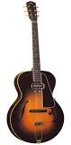
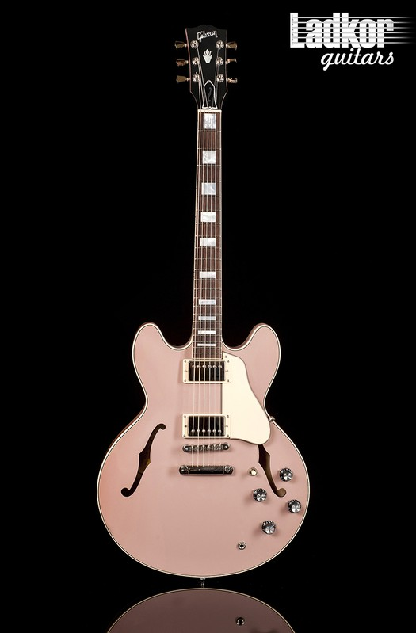
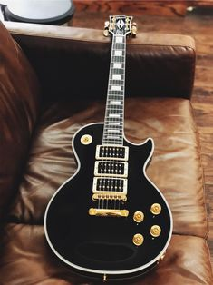
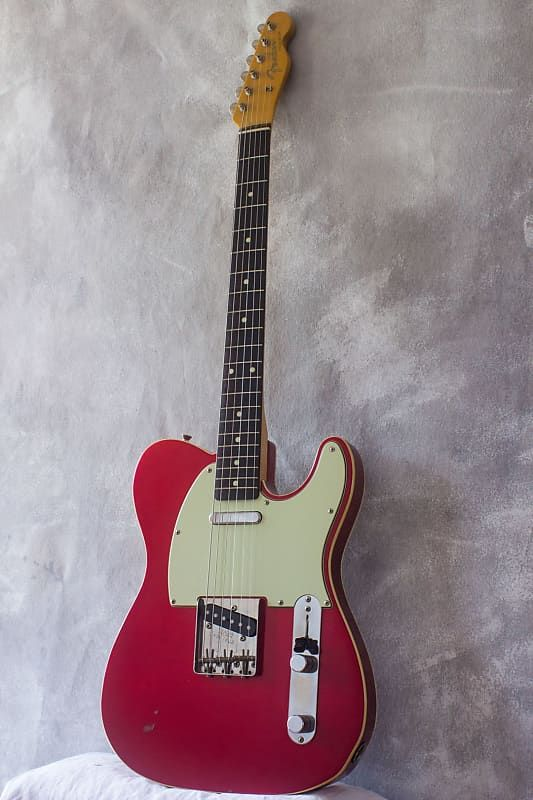
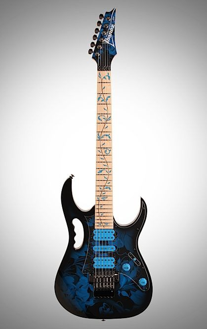

Електрогітара — електричний музичний інструмент, різновид гітари з електричними звукознімачами, що перетворюють коливання металевих струн на коливання електричного струму. Сигнал зі звукознімачів може бути оброблений для отримання різних звукових ефектів та підсилений для відтворення через динаміки. Слово «електрогітара» виникло від словосполучення «електрична гітара».
На початку XX століття музиканти, які грали блюз, соул або кантрі, могли обійтися звичайними акустичними
гітарами. Але вже у 1930-х роках джазові гітаристи відчули необхідність посилити звучання своїх інструментів.
Історія електрогітари відносить нас до 1930 року, коли після звільнення з національної компанії струнних
інструментів(National String Instrument Company) Джордж Бішамп (George Beauchamp) почав роботу з пошуку
нових методів збільшення гучності струнних інструментів.
Популярним рішенням такої проблеми було наступне: провідник, що коливається в полі, яке створюється
одним або декількома постійними магнітами, виробляє зміну в магнітному полі, яке у свою чергу виробляє
змінний струм у дроті намотаному навколо цих магнітів. Сила електричного струму, пропорційна величині
коливань провідника в магнітному полі. Такий самий принцип лежить в основі електромоторів, генераторів,
голок фонографа і акустичних динаміків.
Вже в 1925 році Бішамп експериментував з використанням голок від фонографа на електрогітарі з однієї
струни і розраховував, що розроблений пристрій зможе «знімати» вібрації з кожної окремої струни і
перетворювати ці вібрації на еквівалент електричних коливань.
Готовий прототип Бішамп представив Адольфу Рікенбакеру (Adolph Rickenbacher). Використовуючи вплив
Рікенбакера і його фінансову підтримку, вони заснували компанію, назвавши її «Instruments Rickenbackers».
Компанія негайно почала виробництво «сковорідок» (корпус першої у світі електрогітари) які дуже швидко набули
популярності і направили компанію Рікенбакера на славний шлях першого в історії виробника електрогітар.
Ймовірно одним з перших людей, що створили електрогітару в знайомому «іспанському» стилі був Ллойд Лоар
(Lloyd Loar). Лоар працював інженером на легендарній фірмі Gibson, і однією з його заслуг є дизайн і розробка
мандолін. Ще з 1920-х років Лоар займався проблемою електричного посилення гітар. У 1933 році він організував
фірму Vivi — Tone як незалежне відділення компанії Gibson. Vivi — Tone займалася виробництвом однієї єдиної речі:
електрогітари в «іспанському» стилі. Через рік Vivi — Tone закрилася, але її основне ядро знову перемістилося
в компанію Gibson. Електрична гітара в «іспанському» стилі була майбутнім гітари, і досвід Vivi — Tone
продовжував підштовхувати компанію Gibson до створення електрогітари, що влаштувала справжню революцію і
вплинула на усю історію цього інструменту (модель ES-150).

Одна людина на ім'я Лео Фендер (Leo Fender) була твердо переконана, що майбутнє ринку за гітарами,
що мають суцільний корпус. 1949 рік став поворотним для історії електрогітар, коли Лео випустив продукт,
що став одним з найуспішніших інструментів з суцільним корпусом. Esquire, пізніше перейменований в Broadcaster,
що врешті-решт перетворився на Telecaster, мав усі переваги — відсутність ефекту зворотного зв'язку,
відсутність небажаних гармонік, довгий сустейн (тривалість звучання струни), але при цьому він знайшов
небагато прихильників серед виконавців джазу. Тогочасні гітаристи віддавали перевагу м'якішому, округлішому
звуку, швидше акустичному, як у ES-150. Попри це Telecaster користувався скаженою популярністю серед
виконавців кантрі, блюзу, а пізніше в 1950-x і 1960-x роках, рок-н-роллу.

Обидві фірми, Gibson і Fender представили футуристичні дизайни інструментів. Gibson SG (solid guitar) і
Fender Stratocaster стали стандартними гітарами для рок-зірок у 60-х роках. Свою пікову популярність набрав
Stratocaster, після того, як став улюбленою гітарою Джимі Гендрікса (Jimi Hendrix). І до цього дня, більшість
проданих гітар є продуктами фірми Fender і Gibson.
| Найвідоміша гітара | Посилання на офіційний сайт | Описання бренду | |||||
|---|---|---|---|---|---|---|---|
|  |
gibson.com |
Американський виробник гітар. Штаб-квартира у Альбукерке у Нью-Мексико. Також виробляє піаніно під маркою Baldwin; барабани — під маркою Slingerland. |
|||||
|  |
fender.com |
Американський приватний виробник гітар. Штаб-квартираа у Скоттсдейлі, Аризона. Підприємство відоме своїми гітарами Стратокастер й Телекастер, а також гітарними підсилювачами. |
|||||
|  |
ibanez.com |
Відомий гітарний бренд, яким володіє компанія Hoshino Gakki, розташована в місті Нагоя, Японія. Hoshino Gakki стала однією з перших японських компаній, що виробляють музичні інструменти, яка зуміла досягти успіху в Сполучених Штатах і Європі.
|
|||||
| Повний список сучасних брендів | |||||||